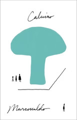

Marcovaldo or the Seasons in the City
Marcovaldo ovvero Le stagioni in città
Despite the stories here being written over an extended period, the early ones at least seem to follow hard on the heels of Mr. Palomar -- keeping up the themes of perception and really looking at the world (even if there's more of a sense of ... Marcovaldo not truly understanding what he sees, as with the mushrooms).
Calvino is an incredibly visual writer; he's drawn to sight and things-people-see, especially when they're hard to notice. I thought he branched out a bit more in these stories, focusing additional attention on smell, touch, and the other senses at various points... but it all comes back to vision in the end, like when Marcovaldo's inability to see in the fog leads him onto an airfield and then onto a plane.
Continuing the comparison with Mr. Palomar, though -- again, we've got a sequence of stories that aren't overburdened with plot (though there's more here than Palomar ever saw). The seasonal structure lends itself to the vignette approach, and I think on the whole it works well.
I do wonder about the precise sequencing of when the various stories were written, though. The latter part of the collection trended more fantastic and fairy-taleish (like the rain-loving plant), which felt more akin to the Our Ancestors works from the late 50s than to the more cosmic-inflected themes Calvino was exploring in the 60s and 70s.